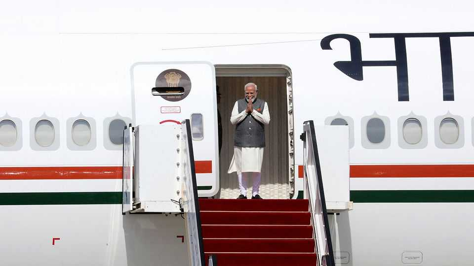
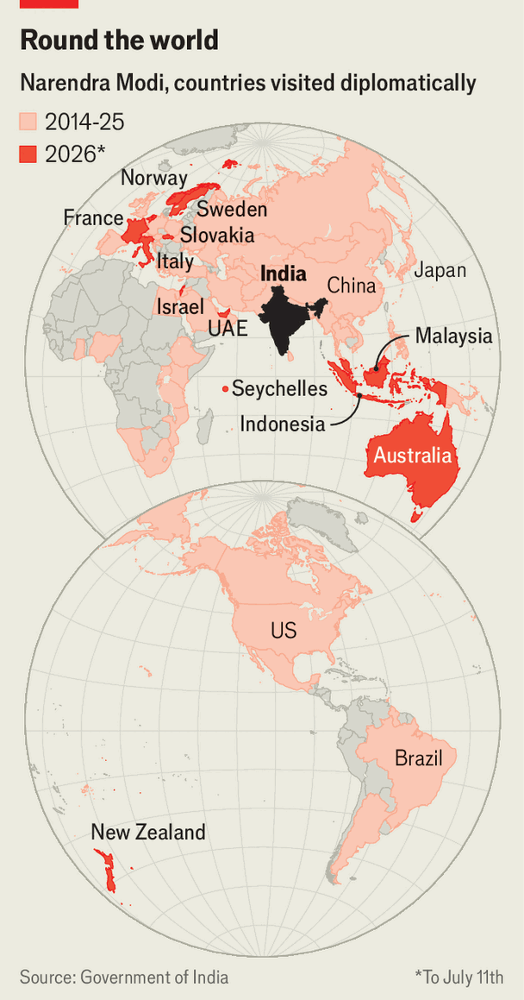

An unreliable America is drawing Asia’s middle powers closer
A burst of Indian diplomacy exemplifies the trend
July 16th 2026

NARENDRA MODI is often seen pressing flesh at bilateral meetings, or embracing his favourite counterparts with a bear hug. A visit to France and Slovakia last month was the peripatetic Indian prime minister’s 100th foreign trip since taking office in 2014. Shortly after returning to India, he jetted off to the Seychelles. He was then in Delhi to host Japan’s prime minister, Takaichi Sanae, before heading to Indonesia, Australia and New Zealand.
The flurry of activity in the Indo-Pacific illustrates a trend: Asia’s middle powers want an insurance policy. Mr Modi aired deals on defence, maritime security, semiconductors and rare earths—all in the shadow of the two superpowers. Like other Asian countries, India has long had to contend with the economic heft and territorial ambitions of China. But as America has become less reliable the balancing act has got rather harder.
C. Raja Mohan, an Indian foreign-policy analyst, has described Mr Modi’s approach as “G minus 2”, referring to the so-called G2 pact that Donald Trump at times talks of striking with China. Asian countries are not turning their backs on America or seeking to contain China, he says: they know they cannot do either. Instead, they are working out what they can do together, putting aside old differences.

For India the shift in America’s position has been particularly jarring. Though it has managed to get off the “punishment tariffs” Mr Trump imposed last August, few see how it can repair its relations with America while he is in office. Diplomats elsewhere in the region are aghast at the deterioration of such a vital relationship.
Such worries were further aggravated in June when America said that it was rebranding its Indo-Pacific Command, as it terms its military structure in the region, as the Pacific Command. The small textual change carried a big message. “Indo” had been added in 2018 to signal maritime co-operation between countries in the Quad—America, Australia, India and Japan—and portray India in particular as a critical partner. Its removal was seen as a snub in Delhi and another sign of American retrenchment.
What did Mr Modi’s tour yield? Most promising is a convergence between India and Australia. Their relationship has long been constrained by Australia’s opposition to nuclear proliferation and India’s suspicion of Western alliances. Politicians from Australia’s Labor Party have also raised concerns about Kashmir. Such differences are now forgotten. On July 9th Australia agreed to supply India with uranium for nuclear energy. Notably, the two will also co-ordinate action on maritime security. “India has long resisted that kind of language,” says Ian Hall of Griffith University.
India’s ties with Japan are also getting stronger, with the focus shifting from infrastructure to defence and technology. The two have agreed to work together on defence production for the first time, even if their inaugural project (making radio antennae) is small-bore. In New Zealand Mr Modi spoke of plans for more naval exercises and information sharing. In Jakarta he signed a deal to supply Indonesia with India’s BrahMos missile system.
Mr Modi is “essentially implementing Mark Carney’s idea of middle powers coming together in Asia”, says Ajay Bisaria, a former Indian high commissioner to Canada. Yet for all his frenetic activity, mutual concerns will not inevitably lead to deep co-operation. Asia’s middle powers still differ on many issues, especially over how to handle Mr Trump, and in some cases attitudes towards China.
Compared with those in Europe, Asian countries may be more divided over how to respond to a shifting balance between the two superpowers. But they are also a lot more exposed. Expect the energetic diplomacy to continue. ■
Stay on top of our India coverage by signing up to Essential India, our free weekly newsletter.